One native UI, three form factors
The same product had to work on the smallest iPhone, a full iPad layout, and Apple Watch. Each screen was built natively and adapted to its device.


Ten years in iOS. I take products from the first architecture call to the App Store, then stay close enough to keep them reliable in production.
I am useful early, while the product is still moving and the architecture has to catch up. I turn loose decisions into software the team can ship.
Joined at the first product stage and owned iOS through the App Store launch.
Lionsoul builds digital-asset investment products for high-net-worth clients and family offices. I set the mobile architecture, shipped the core investment journeys, and stayed responsible for security, observability, releases, and the component system behind the app.
The same product had to work on the smallest iPhone, a full iPad layout, and Apple Watch. Each screen was built natively and adapted to its device.
Unleash flags and A/B tests let us roll out changes gradually, switch journeys by client, and test product decisions between releases.
Tokens lived in Keychain. Biometrics, certificate pinning, device-integrity checks and emulator detection were part of the production app. External pentesters checked the result.
Automation handled the repetitive work. The team kept a weekly Tuesday cadence without turning each submission into a fire drill.
Sentry release health stayed in the weekly workflow. At peak, 99.9% of sessions were crash-free.
I transferred the app between Apple Developer accounts, rebuilt the App Store Connect setup, and kept releases moving during the change.
Built with design, shared with the companyThe iOS team needed a cleaner way to build repeated interface patterns, so we worked with product design on a shared component model. I presented it to the other departments and documented how each piece behaved in design and code. New flows reached production faster because the team stopped rebuilding the same decisions screen by screen.
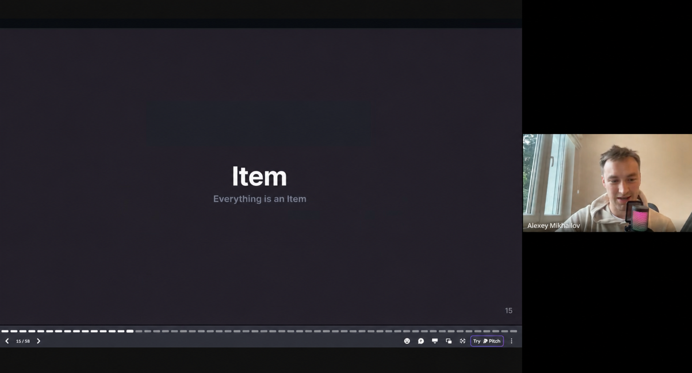
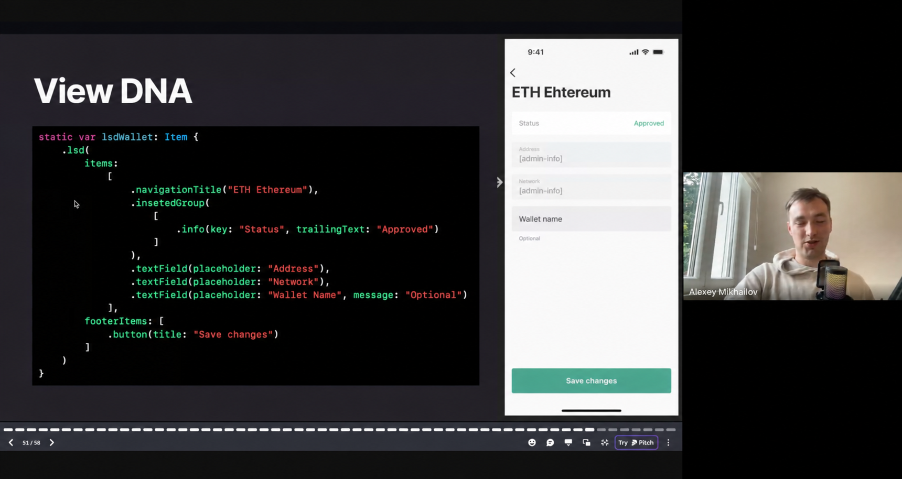
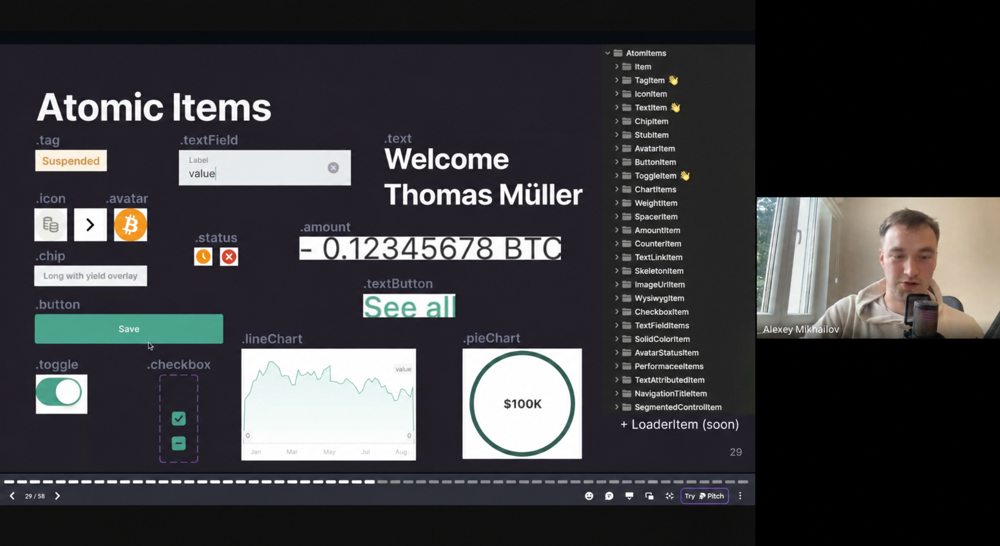
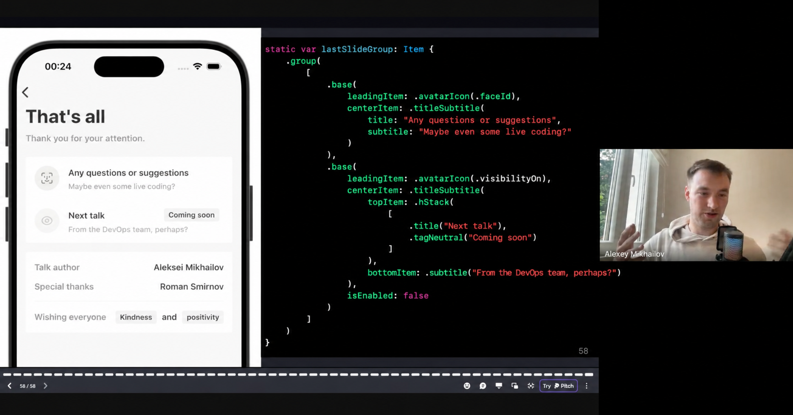
Joined Soramitsu for a focused three-month engagement on its open-source wallet.
I added iOS flows for SORA Wallet and Polkaswap, including cross-chain token exchange across the Polkadot and Kusama ecosystems. The work landed in a production Substrate codebase and shipped through the App Store.
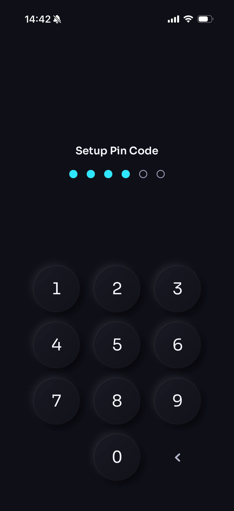
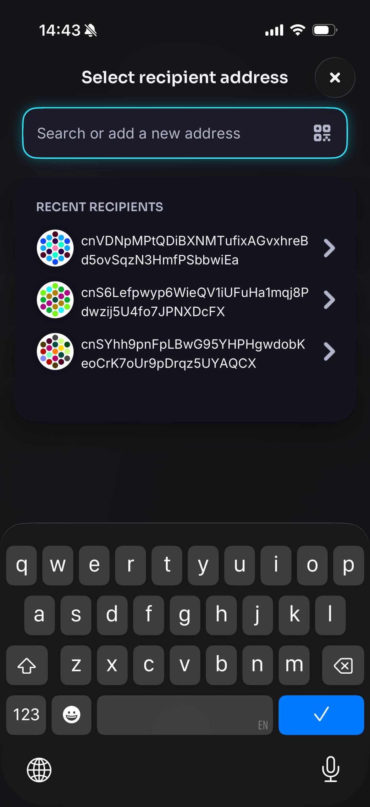
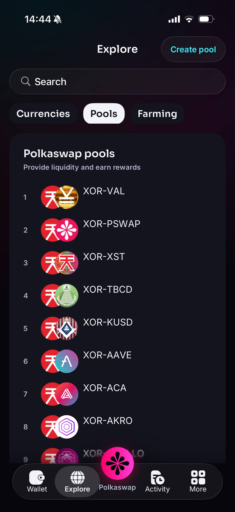
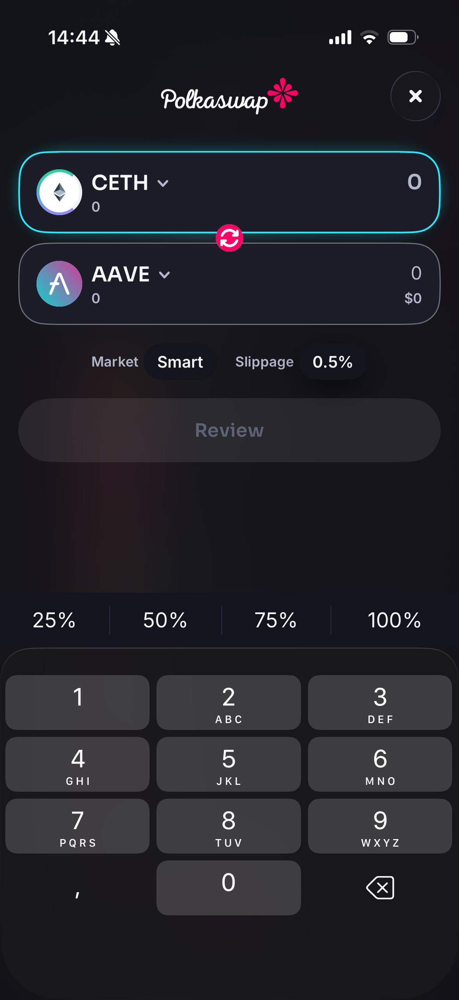
Built the location-aware parts of an airport loyalty app.
CoreLocation and geofencing changed the experience around the traveller's airport. The app surfaced lounges, transport, food, privileges and flight information in one place, with push notifications and analytics behind the journeys.
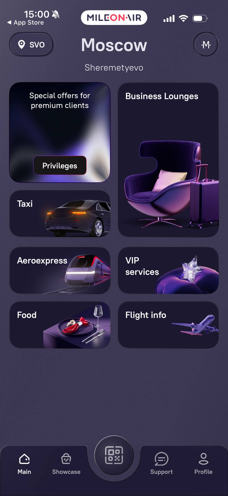
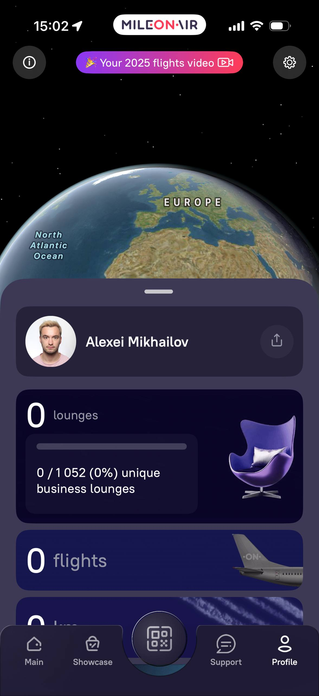
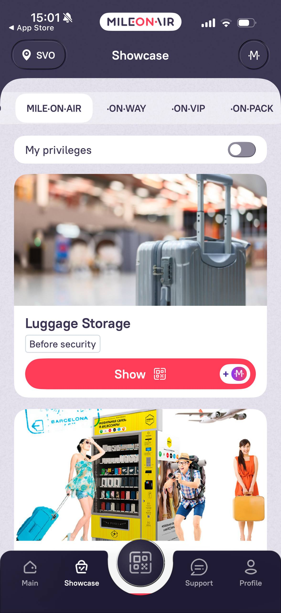
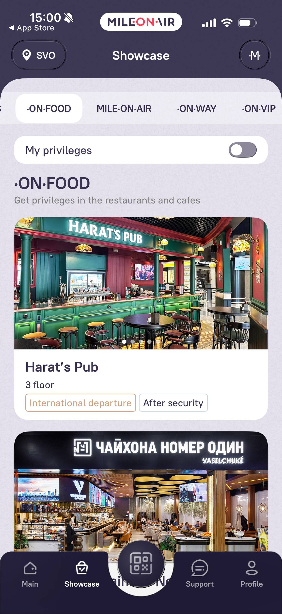
Led the iOS MVP from the first product conversations to its App Store release, including backend contracts, analytics and delivery.
Client applications and smaller releases that show the range behind the three main cases.
That put requirements, estimates, client calls, implementation and release on the same desk. I later mentored two engineers and wrote about iOS on Medium.
Mentored two engineers through technical decisions, feedback and professional growth.
One studio product reached the Sports category Top 7 on launch day.
Wrote practical iOS articles, usually about problems I had just solved in production.
AI is part of my daily engineering toolkit for research, implementation and workflow automation. I check its output against the codebase, the tests and the product before it gets near production.
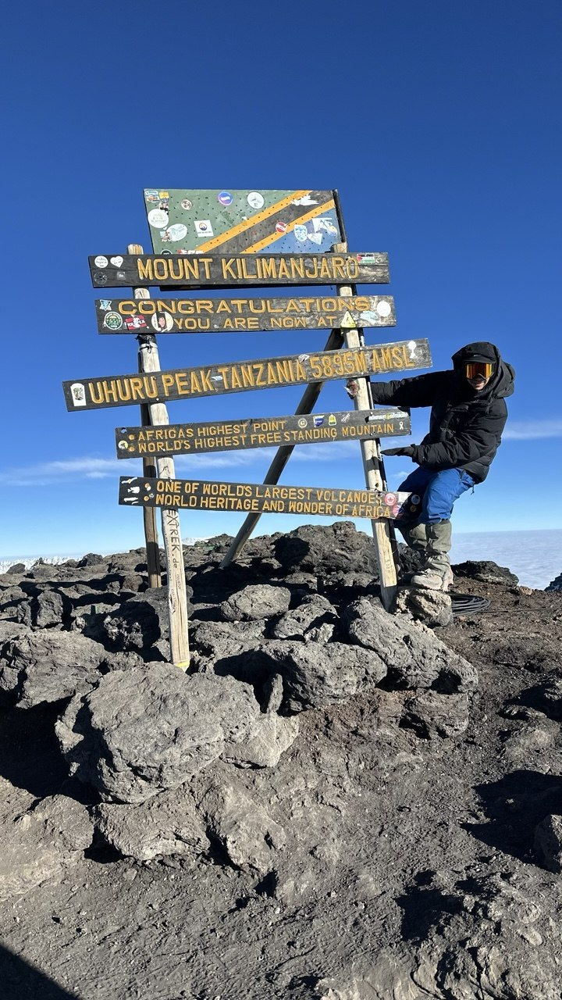
Including Uhuru Peak on Kilimanjaro at 5,895 metres.
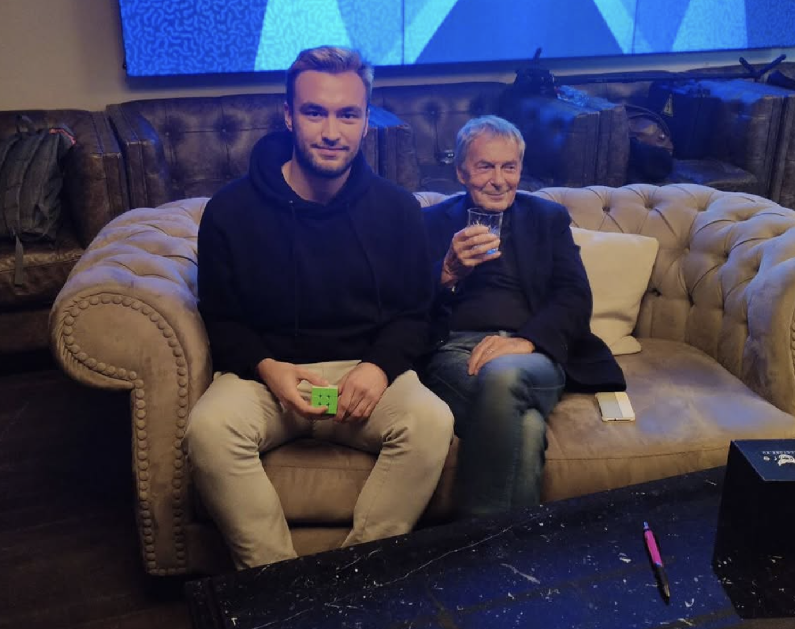
I met Ernő Rubik after years of competing with his puzzle.
A note on staying curious
Over the past year, I have gone deep on agent-assisted development. I burned through 15.8 billion tokens, let one task run for 12 hours and 30 minutes, and kept changing the setup until it felt like mine.
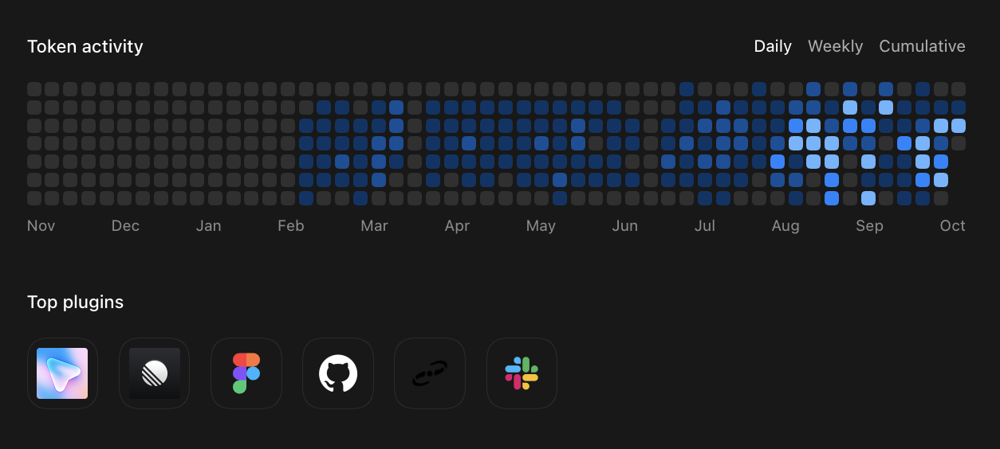
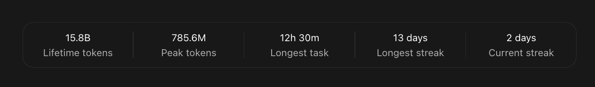
I start messy. Questions, constraints, scraps of ideas.
I compare each option with the product, the code already in place and the time we actually have, then pick the one I can defend.
The plan has to survive a read-through before I touch the code.
I put the interface in preview while changes are still cheap, because a real screen exposes awkward decisions that sound perfectly reasonable in a document.
Superpowers, skills, MCP and CLI take over.
The iOS Debugger Agent and XcodeBuildMCP build the app, launch it in Simulator and show me what the flow actually does under my hands.
Red first. Green before I stop.
I read the final answer beside the diff, the test output and the screen in front of me, looking for the detail that slipped through.
Once the evidence holds up, App Store Connect CLI publishes the build and takes care of the release work.
I use AI hard but own spreadsheets.